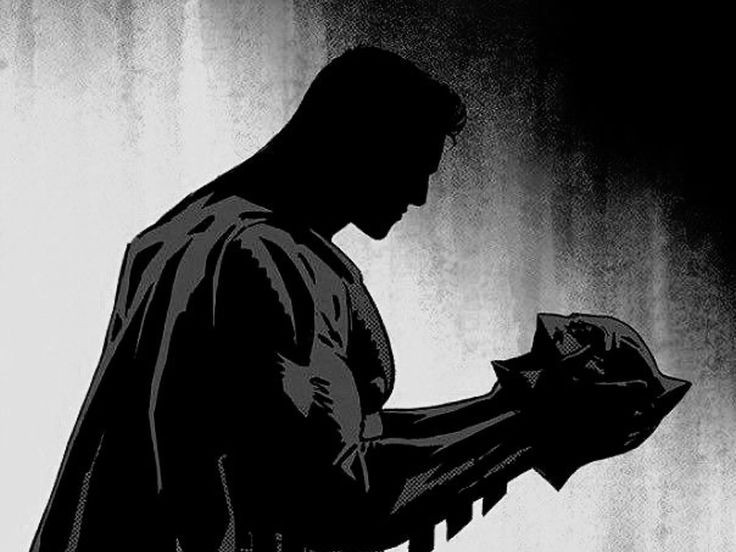

Wayne Records Archive
아니마: 남성의 무의식 속에 있는 여성적 요소
Classification: CONFIDENTIAL / Author: B. Wayne
서곡: 우리가 타인에게서 마주치는 모습은 우리가 내면에서 스스로 마주치는 모습이다.

잃어버린 유년기의 기억 위에서도 내가 브루스 웨인이라는, 다정하고도 섬세한 사회적 자아를 유지할 수 있었던 건 나의 아니마가 가문의 이름 위에 지어진 모래성 덕분일 것이다. 그 모래성은 웨인 가문의 의무가 될 수도 있고, 관습이 될 수도 있으며 또한, 고담시의 사람들이 기대한 이상향의 집합체일 수도 있다.
그러나 그 허울 뿐인 모래성을 두꺼비집처럼 파고들어가 보자. 누군가는 결국 악을 인식해야 한다. 그리고 내 안의 악을 인식할 수 있는 사람은 자기 자신 밖에 없다. 충격적인 과거 속 그날로부터 쌓아올라온 나의 비밀은 영원할 수 없다. 비밀은, 자신을 드러내는 방법을 모색하기 마련이다. 지킬 앤 하이드의 작가 스티븐슨은 그림자를 따라 살아가는 것이 답이 아니라면, 그림자를 억압하는 것 역시 답이 아니라고 말했다. 왜냐하면 양쪽 다 인격을 둘로 분열시키는 행위이기 때문이다. 브루스 웨인과 배트맨, 두 자아의 절충지대는 어디일까.
어쩌면, 브루스 웨인이 배트맨이라는 명확한 현상이야말로 나의 그림자를 억압하지도, 영원히 종속되지도 않은 채로 살아가는 유일한 길이 아닐까.
만약 그렇다면 나는 어떤 말로 나의 은퇴를 번복할 것인가.
질문, 은퇴를 번복한다면 내가 가면을 쓰고 맞서 싸울 대상은 누구인가.
개개인의 빌런과 맞서 싸우는 것은 무용지물이다. 그들을 상대하는 건 시간낭비고 주의분산일 뿐이다. 내가 맞닥뜨릴 적은 시스템이고, 나의 존재를 의심하는 모든 이들이다.
질문, 넌 웨인이 아니라고 하는 이들에게 그들이 틀렸단 걸 증명할 것인가? 그들은 결코 널 인정해주지 않을 것이다.
그렇기에 더더욱 그들과 맞서는 것이다. 그들이 내가 옳았다고 인정하게 바꾸는 것이 아닌, 틀렸단 걸 증명하려고 노력하는 과정을 지켜보는 이들을 나의 편으로 만드는 것이다.
질문, 그들이 너의 편이 될 것이란 확신은 어떻게 하는가?
진심이 통한다는 걸 다만 믿을 뿐이다. 고담시의 시민들이 그러했듯이, 여기도 사람이 사는 곳이니까.
질문, 이 동네가 만약 내일 당장 폐쇄 된다면?
그때야말로 진정한 안식이자, 책임과 의무로부터 해방이 될 것이다. 정 붙였던 곳이 사라지는 것은 아쉬운 일이지만, 원죄 그 자체가 사라진다면 나는 다만 마지막까지 알을 깨고 날아가고자 한, 부화하지 못한 아프락사스일 뿐이다.
질문, 이 아홉 개의 글을 통해 너의 주변 사람들은 어떤 것을 알 수 있나?
가장 깊은 밤이 다시 돌아오고 있고, 그는 이제 내면의 밤에 대해 혼란스러워 하기보단, 그 밤을 향해 다시 한 번 마스크를 쓸 준비를 갖추고 있다는 것이다. 그리고 "입구는 우측이다."